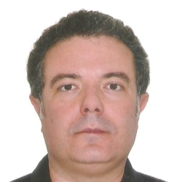
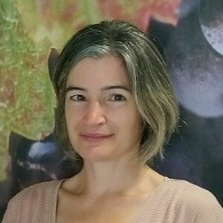
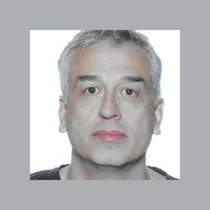
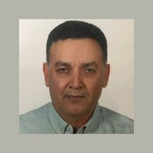
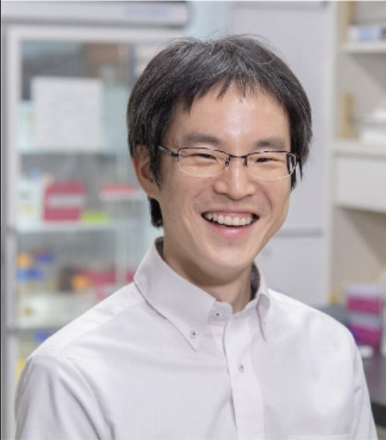

IPGS Founding Meeting & Symposium
The inaugural meeting of the International Plant Grafting Society — Charter signing, Board seating, and Working-Group formation — combined with an international scientific symposium bringing together the world's leading grafting researchers.
Four days in Wuhan
| Date | Program |
|---|---|
| 7 May · Thu | 14:00–21:00 Registration & Welcome Reception |
| 8 May · Fri |
08:30–09:00 Opening Ceremony 09:00–12:00 Scientific Session 1 12:00–14:00 Lunch Break 14:00–17:30 Scientific Session 2 17:30–18:00 IPGS Founding Ceremony & Charter Signing 18:30– Conference Banquet |
| 9 May · Sat | All day Field Visit / Lab Tours |
| 10 May · Sun | Departure |
Conference Chair: Prof. Xu Qiang, Dean & Professor, College of Horticulture & Forestry Sciences, HZAU
Huazhong Agricultural University
College of Horticulture & Forestry Sciences, HZAU
No. 1 Shizishan Street · Hongshan District
Wuhan 430070, Hubei Province · China
Industry visit: partner sites in Wuhan. Transport provided.
- By air — Wuhan Tianhe Airport (WUH), ~45 min to campus by taxi or ride-hailing.
- By rail — Wuhan, Hankou, or Wuchang stations; all within 30–50 min by taxi or metro.
- On campus — enter and exit via the HZAU West Gate.
Conference themes
Scientific sessions
- Molecular regulation of the grafting union
- Cross-species grafting mechanisms
- Rootstock–scion interactions
Industry sessions
- Standardized grafting-seedling production
- Mechanized grafting technology
- Dwarfing rootstock breeding
Attend the symposium
Registration is free of charge. Participants are responsible for their own travel, accommodation, and meals. Capacity is limited to 50 participants — register early to secure your place. Transport for the field visit on 9 May is arranged by the organizers.
To register, contact the organizing committee at yuanlinkeyan@mail.hzau.edu.cn. IPGS founding membership registration is available at the time of conference registration.
International participants
Researchers from ten countries across five continents.
Politecnico di Milano
"MAcro Plant Projection Imaging (MAPPI): whole-plant fluorescence imaging platform"
🇮🇹 Italy
Embrapa Cassava and Fruits
"Advances and prospects in citrus production and breeding in Brazil: considerations on grafting compatibility"
🇧🇷 BrazilUniversity of Catania
"Exogenous Microbial Consortia Modulate Rhizosphere Microbiome and Yield of Grafted Tomato Grown in the Mediterranean Greenhouse"
🇮🇹 Italy
French National Institute for Agriculture, Food, and Environment (INRAE)
"Genetic architecture of grafting-related traits in grapevine"
🇫🇷 FranceCentre for Soil and Applied Biology Segura (CEBAS-CSIC)
"Root–shoot communication in grafted vegetables: hormonal dialogues for stress resilience and sustainable production"
🇪🇸 Spain
Aristotle University of Thessaloniki
"Advanced lighting solutions to produce high-quality grafted watermelon seedlings in CEA"
🇬🇷 Greece
Erciyes University, Faculty of Agriculture
"Salt Stress Effects on Hybrid Bottle Gourd (Lagenaria siceraria) Rootstock Candidates: Plant Growth, Hormones and Nutrient Content"
🇹🇷 TürkiyeLincoln University
"Advances in cryopreservation and cryotherapy for long-term conservation and virus eradication in horticultural crops"
🇳🇿 New ZealandSwedish University of Agricultural Sciences (SLU)
🇸🇪 Sweden
Kyoto University
🇯🇵 JapanChinese academic speakers
Northwest A&F University, Yangling
🇨🇳 ChinaNanjing Agricultural University
🇨🇳 ChinaZhejiang University, Hangzhou
🇨🇳 ChinaQingdao Agricultural University
🇨🇳 ChinaChina Agricultural University, Beijing
🇨🇳 ChinaShandong Agricultural University, Tai'an
🇨🇳 ChinaZhengzhou Fruit Research Institute, CAAS
🇨🇳 ChinaChina Agricultural University, Beijing
🇨🇳 ChinaRecommended accommodation
Participants arrange and pay for their own accommodation. Two options near the campus are available at negotiated rates (breakfast included).
HZAU International Academic Exchange Center
On campus · No. 66 Nanhu Avenue, Wuhan (inside HZAU)
Tel: +86 27 87280141 / 87280142
Standard room: ¥350 / night
Single room: ¥280 / night
Triple room: ¥420 / night
City Hotel — Wuhan Nanhu HZAU Branch
Near campus · No. 81 Nanhu Avenue, Hongshan District, Wuhan
Tel: +86 27 88000188 · +86 18186189082
Rooms: ¥350–400 / night
Organizer & co-organizers
Organizer: Huazhong Agricultural University
Co-organizers
- National Key Laboratory for Germplasm Innovation and Utilization of Horticultural Crops
- International Joint Laboratory for Germplasm Innovation and Utilization of Horticultural Crops (Ministry of Education)
- College of Horticulture & Forestry Sciences, HZAU
- HZAU–Lincoln University Joint College
- Horticulture Advances Editorial Office
- Wuhan (China–Pakistan) Belt and Road Joint Laboratory for Horticultural Crop Germplasm Innovation and Utilization
Contact
For registration, logistics, and any further inquiries:
Shoaib MunirTel: +86 27 87286119
Email: shoaib@mail.hzau.edu.cn
National Key Laboratory for Germplasm Innovation and Utilization of Horticultural Crops
College of Horticulture & Forestry Sciences, HZAU